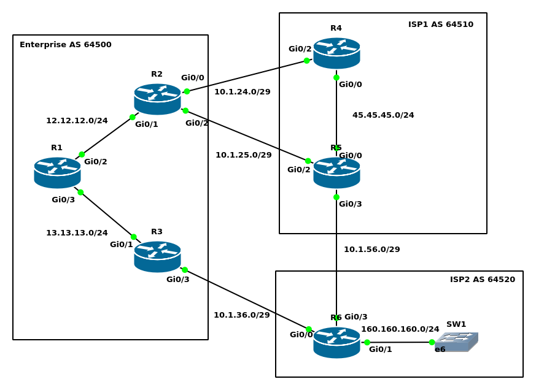

BGP Scenario
ccnp-routing
Full lab scenario building eBGP and iBGP peerings across three autonomous systems, injecting routes, and verifying neighbor and BGP table state.

NoteLab Files Download
Everything this lab needs, ready to download.
- bgp-running-config.txt (8 KB), the full running configurations of the routers in this scenario
hostname R1 ! interface Loopback0 ip address 1.1.1.1 255.255.255.255 ! interface GigabitEthernet0/2 ip address 12.12.12.1 255.255.255.0 ! interface GigabitEthernet0/3 ip address 13.13.13.1 255.255.255.0 ! router ospf 1 network 1.1.1.1 0.0.0.0 area 0 network 12.12.12.1 0.0.0.0 area 0 network 13.13.13.1 0.0.0.0 area 0R2:
hostname R2 ! interface Loopback0 ip address 2.2.2.2 255.255.255.255 ! interface GigabitEthernet0/0 ip address 10.1.24.2 255.255.255.248 ! interface GigabitEthernet0/1 ip address 12.12.12.2 255.255.255.0 ! interface GigabitEthernet0/2 ip address 10.1.25.2 255.255.255.248 ! router ospf 1 network 2.2.2.2 0.0.0.0 area 0 network 12.12.12.2 0.0.0.0 area 0R3:
hostname R3 ! interface Loopback0 ip address 3.3.3.3 255.255.255.255 ! interface GigabitEthernet0/1 ip address 13.13.13.3 255.255.255.0 ! interface GigabitEthernet0/3 ip address 10.1.36.3 255.255.255.248 ! router ospf 1 network 3.3.3.3 0.0.0.0 area 0 network 13.13.13.3 0.0.0.0 area 0R4:
hostname R4 ! interface Loopback0 ip address 4.4.4.4 255.255.255.255 ! interface GigabitEthernet0/0 ip address 45.45.45.4 255.255.255.0 ! interface GigabitEthernet0/2 ip address 10.1.24.4 255.255.255.248 ! router eigrp R4 ! address-family ipv4 unicast autonomous-system 1 ! topology base exit-af-topology network 4.4.4.4 0.0.0.0 network 45.45.45.4 0.0.0.0 exit-address-familyR5:
hostname R5 ! interface Loopback0 ip address 5.5.5.5 255.255.255.255 ! interface GigabitEthernet0/0 ip address 45.45.45.5 255.255.255.0 ! interface GigabitEthernet0/2 ip address 10.1.25.5 255.255.255.248 ! interface GigabitEthernet0/3 ip address 10.1.56.5 255.255.255.248 ! router eigrp R5 ! address-family ipv4 unicast autonomous-system 1 ! topology base exit-af-topology network 5.5.5.5 0.0.0.0 network 45.45.45.5 0.0.0.0 exit-address-familyR6:
hostname R6 ! interface Loopback0 ip address 6.6.6.6 255.255.255.255 ! interface GigabitEthernet0/0 ip address 10.1.36.6 255.255.255.248 ! interface GigabitEthernet0/1 ip address 160.160.160.6 255.255.255.0 ! interface GigabitEthernet0/3 ip address 10.1.56.6 255.255.255.248
BGP neighborship configuration
R1:R1(config)#router bgp 64500 R1(config-router)#neighbor 2.2.2.2 remote-as 64500 R1(config-router)#neighbor 2.2.2.2 next-hop-self R1(config-router)#neighbor 2.2.2.2 update-source loopback 0 R1(config-router)#neighbor 3.3.3.3 remote-as 64500 R1(config-router)#neighbor 3.3.3.3 next-hop-self R1(config-router)#neighbor 3.3.3.3 update-source loopback 0R2:
R2(config)#ip route 4.4.4.4 255.255.255.255 10.1.24.4 R2(config)#ip route 5.5.5.5 255.255.255.255 10.1.25.5 R2(config)#router bgp 64500 R2(config-router)#neighbor 4.4.4.4 remote-as 64510 R2(config-router)#neighbor 4.4.4.4 ebgp-multihop 2 R2(config-router)#neighbor 4.4.4.4 update-source loopback 0 R2(config-router)#neighbor 5.5.5.5 remote-as 64510 R2(config-router)#neighbor 5.5.5.5 ebgp-multihop 2 R2(config-router)#neighbor 5.5.5.5 update-source loopback 0 R2(config-router)#neighbor 1.1.1.1 remote-as 64500 R2(config-router)#neighbor 1.1.1.1 next-hop-self R2(config-router)#neighbor 1.1.1.1 update-source loopback 0 R2(config-router)#neighbor 3.3.3.3 remote-as 64500 R2(config-router)#neighbor 3.3.3.3 next-hop-self R2(config-router)#neighbor 3.3.3.3 update-source loopback 0R3:
R3(config)#ip route 6.6.6.6 255.255.255.255 10.1.36.6 R3(config)#router bgp 64500 R3(config-router)#neighbor 6.6.6.6 remote-as 64520 R3(config-router)#neighbor 6.6.6.6 ebgp-multihop 2 R3(config-router)#neighbor 6.6.6.6 update-source loopback 0 R3(config-router)#neighbor 1.1.1.1 remote-as 64500 R3(config-router)#neighbor 1.1.1.1 next-hop-self R3(config-router)#neighbor 1.1.1.1 update-source loopback 0 R3(config-router)#neighbor 2.2.2.2 remote-as 64500 R3(config-router)#neighbor 2.2.2.2 next-hop-self R3(config-router)#neighbor 2.2.2.2 update-source loopback 0R4:
R4(config)#ip route 2.2.2.2 255.255.255.255 10.1.24.2 R4(config)#router bgp 64510 R4(config-router)#neighbor 2.2.2.2 remote-as 64500 R4(config-router)#neighbor 2.2.2.2 ebgp-multihop 2 R4(config-router)#neighbor 2.2.2.2 update-source loopback 0 R4(config-router)#neighbor 5.5.5.5 remote-as 64510 R4(config-router)#neighbor 5.5.5.5 next-hop-self R4(config-router)#neighbor 5.5.5.5 update-source loopback 0R5:
R5(config)#ip route 2.2.2.2 255.255.255.255 10.1.25.2 R5(config)#ip route 6.6.6.6 255.255.255.255 10.1.56.6 R5(config)#router bgp 64510 R5(config-router)#neighbor 2.2.2.2 remote-as 64500 R5(config-router)#neighbor 2.2.2.2 ebgp-multihop 2 R5(config-router)#neighbor 2.2.2.2 update-source loopback 0 R5(config-router)#neighbor 6.6.6.6 remote-as 64520 R5(config-router)#neighbor 6.6.6.6 ebgp-multihop 2 R5(config-router)#neighbor 6.6.6.6 update-source loopback 0 R5(config-router)#neighbor 4.4.4.4 remote-as 64510 R5(config-router)#neighbor 4.4.4.4 next-hop-self R5(config-router)#neighbor 4.4.4.4 update-source loopback 0R6:
R6(config)#ip route 5.5.5.5 255.255.255.255 10.1.56.5 R6(config)#ip route 3.3.3.3 255.255.255.255 10.1.36.3 R6(config)#router bgp 64520 R6(config-router)#neighbor 3.3.3.3 remote-as 64500 R6(config-router)#neighbor 3.3.3.3 ebgp-multihop 2 R6(config-router)#neighbor 3.3.3.3 update-source loopback 0 R6(config-router)#neighbor 5.5.5.5 remote-as 64510 R6(config-router)#neighbor 5.5.5.5 ebgp-multihop 2 R6(config-router)#neighbor 5.5.5.5 update-source loopback 0BGP injecting routes
R1(config)#router bgp 64500 R1(config-router)#network 13.13.13.0 mask 255.255.255.0 R1(config-router)#network 12.12.12.0 mask 255.255.255.0
R2(config)#router bgp 64500 R2(config-router)#network 12.12.12.0 mask 255.255.255.0
R3(config)#router bgp 64500 R3(config-router)#network 13.13.13.0 mask 255.255.255.0
R4(config)#router bgp 64510 R4(config-router)#network 45.45.45.0 mask 255.255.255.0
R5(config)#router bgp 64510 R5(config-router)#network 45.45.45.0 mask 255.255.255.0
R6(config)#ip prefix-list LAN160 permit 160.160.160.0/24 R6(config)#route-map RDtoBGP permit R6(config-route-map)#match ip address prefix-list LAN160 R6(config-route-map)#exit R6(config)#router bgp 64520 R6(config-router)#redistribute connected route-map RDtoBGPSome verification
R6#show ip bgp
BGP table version is 7, local router ID is 6.6.6.6
Status codes: s suppressed, d damped, h history, * valid, > best, i - internal,
r RIB-failure, S Stale, m multipath, b backup-path, f RT-Filter,
x best-external, a additional-path, c RIB-compressed,
Origin codes: i - IGP, e - EGP, ? - incomplete
RPKI validation codes: V valid, I invalid, N Not found
Network Next Hop Metric LocPrf Weight Path
* 12.12.12.0/24 5.5.5.5 0 64510 64500 i
*> 3.3.3.3 0 64500 i
* 13.13.13.0/24 5.5.5.5 0 64510 64500 i
*> 3.3.3.3 0 0 64500 i
* 45.45.45.0/24 3.3.3.3 0 64500 64510 i
*> 5.5.5.5 0 0 64510 i
*> 160.160.160.0/24 0.0.0.0 0 32768 ?
?means the route is injected into BGP by the redistribution commandimeans the route is injected into BGP by the network command
R2#show ip bgp summary BGP router identifier 2.2.2.2, local AS number 64500 BGP table version is 8, main routing table version 8 4 network entries using 576 bytes of memory 9 path entries using 720 bytes of memory 5/4 BGP path/bestpath attribute entries using 760 bytes of memory 3 BGP AS-PATH entries using 72 bytes of memory 0 BGP route-map cache entries using 0 bytes of memory 0 BGP filter-list cache entries using 0 bytes of memory BGP using 2128 total bytes of memory BGP activity 4/0 prefixes, 10/1 paths, scan interval 60 secs Neighbor V AS MsgRcvd MsgSent TblVer InQ OutQ Up/Down State/PfxRcd 1.1.1.1 4 64500 179 180 8 0 0 02:38:37 2 3.3.3.3 4 64500 175 170 8 0 0 02:31:52 2 4.4.4.4 4 64510 333 332 8 0 0 04:56:53 2 5.5.5.5 4 64510 195 191 8 0 0 02:50:30 2R2’s BGP topology table
R2#show ip bgp
BGP table version is 8, local router ID is 2.2.2.2
Status codes: s suppressed, d damped, h history, * valid, > best, i - internal,
r RIB-failure, S Stale, m multipath, b backup-path, f RT-Filter,
x best-external, a additional-path, c RIB-compressed,
Origin codes: i - IGP, e - EGP, ? - incomplete
RPKI validation codes: V valid, I invalid, N Not found
Network Next Hop Metric LocPrf Weight Path
*> 12.12.12.0/24 0.0.0.0 0 32768 i
* i 1.1.1.1 0 100 0 i
r i 13.13.13.0/24 3.3.3.3 0 100 0 i
r>i 1.1.1.1 0 100 0 i
* 45.45.45.0/24 4.4.4.4 0 0 64510 i
*> 5.5.5.5 0 0 64510 i
* 160.160.160.0/24 5.5.5.5 0 64510 64520 ?
* 4.4.4.4 0 64510 64520 ?
*>i 3.3.3.3 0 100 0 64520 ?
R2’s routing table for BGP
R2#show ip route bgp
Gateway of last resort is not set
45.0.0.0/24 is subnetted, 1 subnets
B 45.45.45.0 [20/0] via 5.5.5.5, 01:39:25
160.160.0.0/24 is subnetted, 1 subnets
B 160.160.160.0 [200/0] via 3.3.3.3, 00:13:34
Back to top